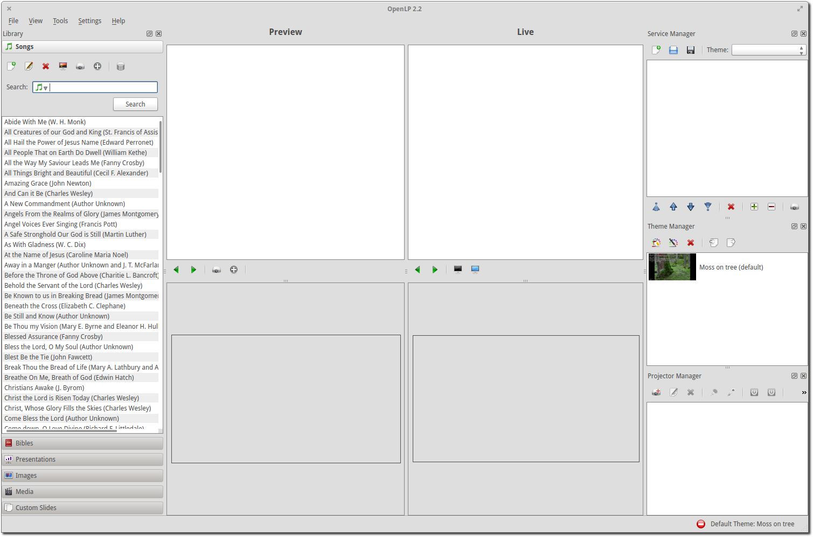

First Time Wizard
When using OpenLP for the first time, the First Time Wizard will help you with setting up your installation. This wizard is not intended to be a comprehensive setup but will help you with the basics.
Select Translation
You can choose the translation you want to use or let OpenLP automatically select it based on your operating system locale. Click OK to continue.
The “Welcome to the First Time Wizard” dialog box will appear next. Click Next.
The wizard will now download information from a server about which bibles, songs and themes that can be downloaded be the wizard. This can take a few moments, depending on the speed of your internet connection and the load on the server, so please be patient.
Activate Required Plugins
OpenLP has several plugins to choose from. By default, all plugins are enabled, except the Remote Access plugin. For more information on these plugins, please read the Media Manager section in the manual. If you are not sure of which plugins to enable or disable, leave the selection as is. You can easily activate or deactivate plugins later, when OpenLP is running, by going to . Click Next to continue.
Sample Songs
OpenLP provides some sample songs in a few languages for downloading and importing into your new song database. This is convenient for new users who do not have any songs yet. If you already have songs in your database, OpenLP will simply add these sample songs to your database, leaving your existing songs intact. Once you are happy with which songs you’d like, click Next.
Sample Bibles
There are also a number of free Bibles that you can download and install. Using the check box next to each Bible, select each Bible that you would like installed. If you do not wish to install any Bibles, simply leave them all unchecked. Once you are happy with your selection, click Next to continue.
Sample Themes

Some sample themes are also available for download and installation into OpenLP. As with the Bibles, simply check the check box next to each theme to select it. If you are a new user, these themes can help you understand how themes work. If you are happy with your selected themes, click Next to continue.
Default Settings
Default Display Monitor
Screen 2. If you are installing OpenLP but are not connected to a second output at the time, you can set this up later by going to .
Default Theme
If you have selected one or more themes on the themes page of the wizard, you can select which theme you’d like to be the default theme.
If you are happy with the selections you have made, click Next to continue to the next page.
Making progress.
On the last page of the wizard, OpenLP will download the sample songs, Bibles and themes, and set up OpenLP for you. Click Finish and OpenLP will start.
First the OpenLP logo will be shown for a few seconds while the program loads.
Then OpenLP will import the songs that were added by the first time wizard.
The main window.
Re-run First Time Wizard
If you wish to add items from the First Time Wizard at a later date or had an error while installing OpenLP you can run it again by going to . Select Yes to run the First Time Wizard.
After selecting Yes the First Time Wizard will run again.